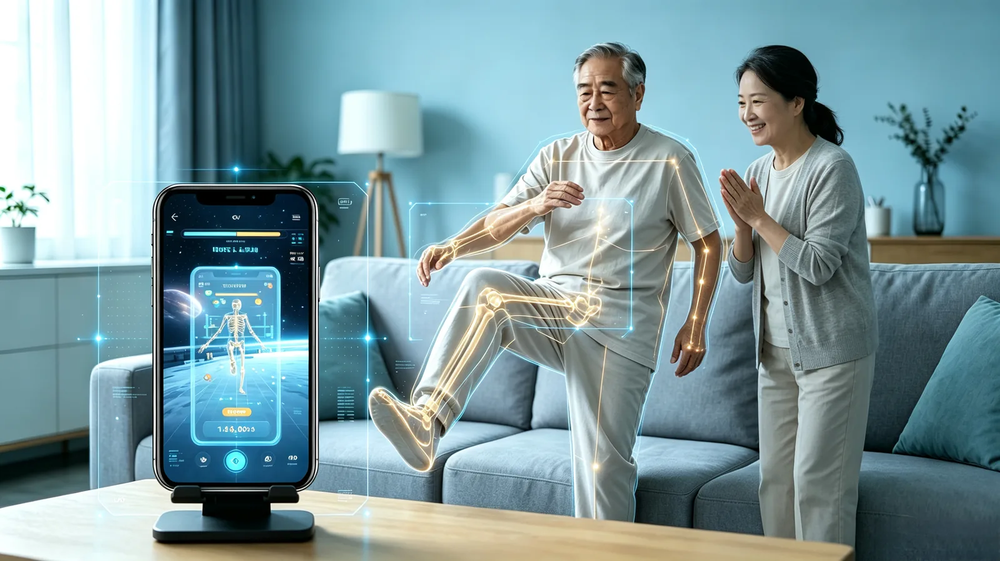
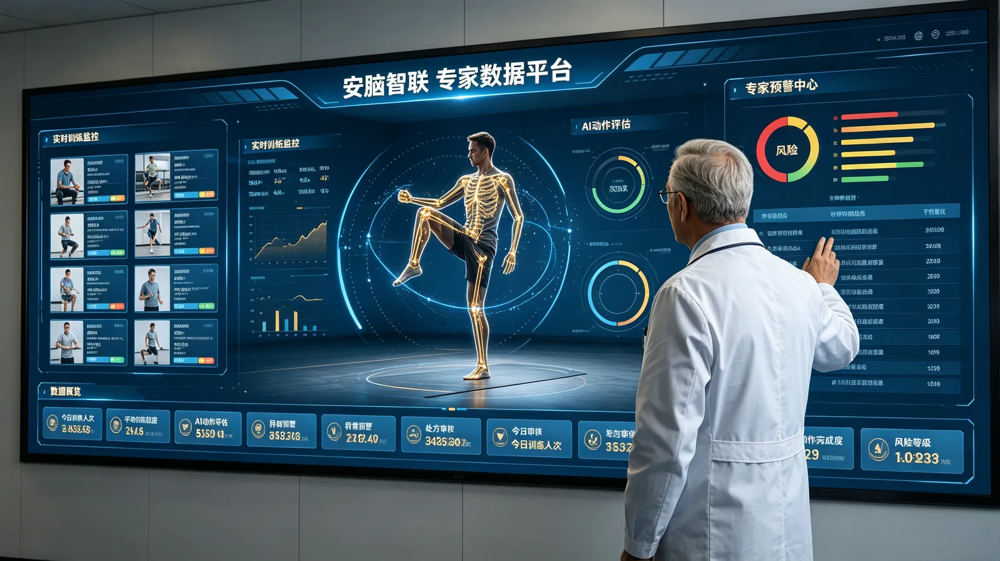
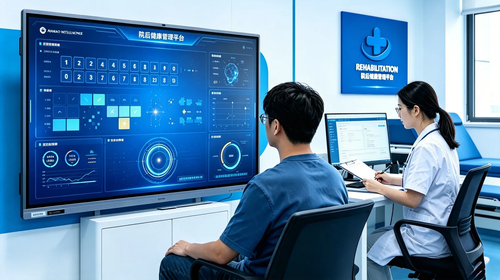

评估
记录动作表现，了解当前康复状态。

场景概念示意CONNECTED SOLUTIONS
覆盖患者、专家与机构，让专业服务从院内延伸到居家。
01 / FOR PATIENTS
从智能评估到趣味训练，让居家康复有方向、有反馈、有陪伴。

场景概念示意02 / FOR PROFESSIONALS
连接患者院后的每一次训练，辅助专家开展计划审核与持续随访。

场景概念示意03 / FOR ORGANIZATIONS
贯通院内评估与院外训练，让科室管理、专业服务与患者数据连接起来。
ONE CONTINUOUS JOURNEY
记录动作表现，了解当前康复状态。
专业人员制定与复核训练安排。
通过游戏交互，完成日常训练任务。
汇总训练记录，为后续调整提供参考。
从一次交流开始，找到适合您的产品与合作方式。